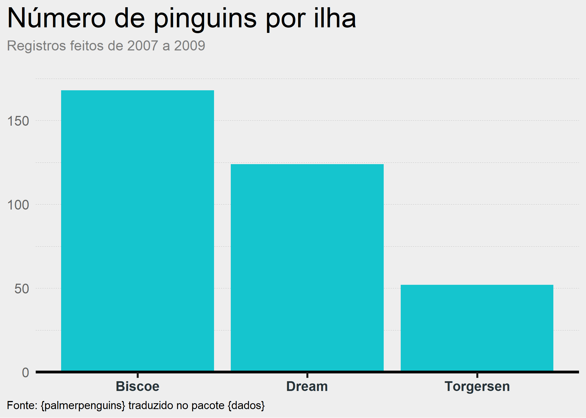

Temas dos principais jornais brasileiros para o ggplot2.
Esse pacote foi inspirado no pacote ggthemes.
O objetivo deste pacote é ajudar os usuários a criar gráficos mais bonitos de forma fácil e rápida.
Instalação
Você pode instalar o pacote ggimprensa com a seguinte função:
# install.packages("remotes")
remotes::install_github("brunomioto/ggimprensa")Uso
Os temas existentes no pacote atualmente são:
tema_folha()referente ao jornal Folha de São Paulotema_g1()referente ao jornal g1 - Globotema_nexo()referente ao Nexo Jornaltema_poder360()referente ao jornal Poder 360
Folha de São Paulo
p1 <- pinguins_grupos |>
ggplot(aes(x = ilha, y = n)) +
geom_col(fill = "#f47080")+
labs(
title = "Número de pinguins por ilha",
subtitle = "Registros feitos de 2007 a 2009",
caption = "Fonte: {palmerpenguins} traduzido no pacote {dados}"
)+
scale_y_continuous(expand = expansion(mult = c(0,0.05)))+
tema_folha()
p1Paleta de cores - Folha de São Paulo
Para a Folha, também é possível colorir os gráficos com a paleta de cores do jornal. Para isso, utilize a função scale_fill_folha() para preenchimentos e scale_color_folha() para contornos.
p1_paleta <- pinguins |>
group_by(especie, ilha) |>
count() |>
ggplot(aes(x = ilha, y = n)) +
geom_col(aes(fill = especie))+
labs(
title = "Número de pinguins por ilha",
subtitle = "Registros feitos de 2007 a 2009",
caption = "Fonte: {palmerpenguins} traduzido no pacote {dados}"
)+
scale_y_continuous(expand = expansion(mult = c(0,0.05)))+
scale_fill_folha()+
tema_folha()
p1_paletaG1
p2 <- pinguins_grupos |>
ggplot(aes(x = ilha, y = n)) +
geom_col(fill = "#c6160d")+
labs(
title = "Número de pinguins por ilha",
subtitle = "Registros feitos de 2007 a 2009",
caption = "Fonte: {palmerpenguins} traduzido no pacote {dados}"
)+
scale_y_continuous(expand = expansion(mult = c(0,0.05)))+
tema_g1()
p2Nexo
p3 <- pinguins_grupos |>
ggplot(aes(x = ilha, y = n)) +
geom_col(fill = "#15c5ce")+
labs(
title = "Número de pinguins por ilha",
subtitle = "Registros feitos de 2007 a 2009",
caption = "Fonte: {palmerpenguins} traduzido no pacote {dados}"
)+
scale_y_continuous(expand = expansion(mult = c(0,0.05)))+
tema_nexo()
p3
Poder 360
p4 <- pinguins_grupos |>
ggplot(aes(x = ilha, y = n)) +
geom_col(fill = "#fd541e")+
labs(
title = "Número de pinguins por ilha",
subtitle = "Registros feitos de 2007 a 2009",
caption = "Fonte: {palmerpenguins} traduzido no pacote {dados}"
)+
scale_y_continuous(expand = expansion(mult = c(0,0.05)))+
tema_poder360()
p4
Caso queira adicionar a faixa superior ao gráfico, utilize a função linha_poder360()
linha_poder360(p4)
Sobre fake news
Todos sabemos que as fake news são um problema nos dias de hoje, e alguns podem levantar o (válido) ponto sobre este pacote contribuir com isso. No entanto, alguns pontos devem ser levados em consideração:
O pacote ggthemes já existe há um bom tempo, com temas dos principais jornais do mundo.
Para criar uma notícia falsa, é muito mais simples criar uma montagem com o tema dos gráficos do que programar com ggplot2. Além disso, sabemos que uma simples montagem já é mais que o suficiente para uma notícia falsa circular.
O objetivo principal deste pacote é ajudar os usuários a criar gráficos mais bonitos de forma fácil e rápida. Não são todos os usuários que sabem quais as melhores práticas de visualização de dados, mas reconhecem que alguns jornais brasileiros fazem um ótimo trabalho e podem utilizar isso como um ponto de partida.
Melhorias e sugestões
Tem alguma ideia para o pacote ou sugestão de como posso melhorá-lo? Crie uma nova issue para que eu possa ajudar!